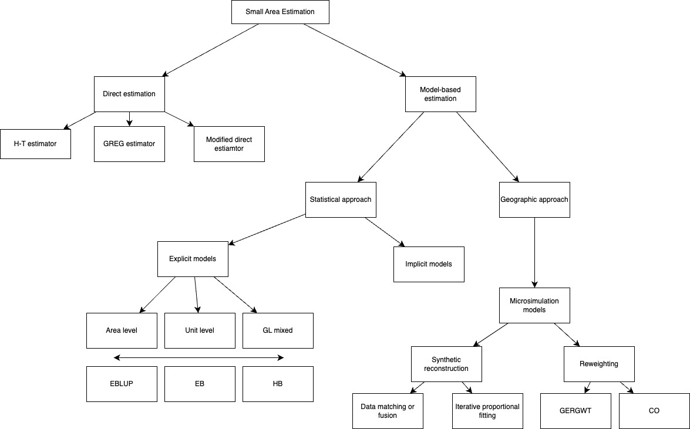
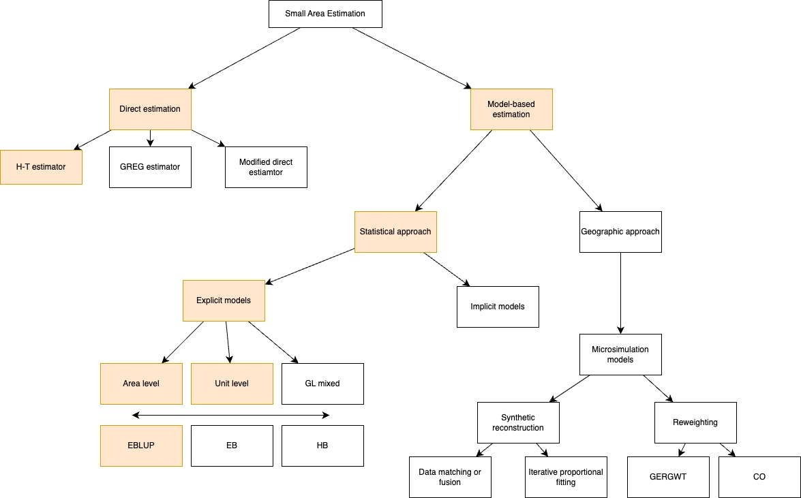

Mapping the Unseen
A practical guide to Small Area Estimation
CUPUM 2025
Workshop structure
- Theoretical lecture on Small Area Estimation
- Introduction to Small Area Estimation
- SAE Methods
- SAE Applications
- Some guidelines for using SAE
- Practical session in
R
Introduction to Small Area Estimation
Why do we need Small Area Estimation?
- Sometimes, as researchers, we want to generate estimates at very specific georgaphical levels.
- Imagine you are a researcher trying to understand mobility behaviours for a specific neighbourhood.
- You have access to individual data from a national travel survey, but not for that neighbourhood.
- This is a common issue: surveys often do not sample enough people in our are of interest to produce reliable estimates.
- This is where Small Area Estimation comes in – it helps us borrow strength from other data to fill in these gaps.
This workshop
What we will cover
- Overview on SAE methods
- The basics: Direct estimation methods
- Indirect estimation methods: Statistical approaches to SAE
- Intuitive understanding of the methods
- Practical guide on when to use them
What we will not cover
- Geographical approaches to SAE (spatial microsimulation)
- In-depth statistical background of the methods
- We will provide additional resources at the end of the lecture
The advantages of SAE
- Overcome data limitations at local levels. Traditional surveys often lack large-enough samples to produce reliable statistics at local levels. SAE methods allow to make statistically valid estimates even in areas with limited or no survey data.
- Support evidence-based policy-making at local level. Govenrments and institutions increasingly require local-level data to allocate resources more effectively. SAE can help in gathering the evidence required for planning, monitoring, and evaluating progress on key indicators at the scale where interventions happen.
What is SAE?
- Small Area Estimation is a statistical modelling technique that uses survey data and auxiliary information (e.g. census data, administrative data, satellite imagery) to produce estimates of variables of interest at more granular level for the domains of interest.
- SAE methods produce “new” statistics that were not available before, at higher levels of accuracy than direct estimates generated through surveys.
Some concepts
- Survey data: information collected from a sample of individuals through their responses to questions.
- Sample: smaller selection or subset of a larger group called population. The sample should be representative of the full population.
- Population: full group we are interested in (e.g., all people in a country).
- Small area (or domain): small geographical area or spatial population unit for which reliable statistics cannot be produced due to limitations in the available data.
- Estimator: rule or formula to approximate unknown population parameters (e.g. sample mean, poverty rates).
- Accuracy: distance between the statistical estimates and the “correct” values. It includes random errors (unpredictable and due to chance e.g. stopwatch), and systematic errors (consistent and repeatable e.g. biased scale)

Accuracy vs precision
SAE techniques
- There are many SAE techniques – the choice will depend on the availability of auxiliary data and the relationship between these data and the variable of interest.
Summart of SAE methods
SAE methods overview (Adapted from Rahman, 2008)
What will we cover?
SAE methods overview (Adapted from Rahman, 2008)
Direct estimation methods
A brief note on survey sampling
- Sample surveys are cost-effective methods for obtaining information about wide-ranging topics at frequent intervals over time.
- Surveys provide reliable estimators for areas where the sample size is large (large domains). These estimators can rely solely on area information and still be trust-worthy. These types of estimators are called direct estimators.
Direct estimation methods
- Also known as design-based methods, they rely exclusively on domain-level data.
- These estimators only work when the available sample is large enough to cover all domains of interest with sufficient data in each area. If a domain is not included in the sample, no estimates are produced for that domain.
- What if there is data, but it is scarce? The estimates produced by design-based methods will be unreliable due to large errors.
The Horvitz-Thompson estimator
- It is used to estimate totals or means in a population from a probability sample.
- It accounts for the unequal probability of inclusion in the sample.
- The H-T estimator for the mean of area \(d\) is:
\[ \hat{\bar{Y_d}} = \frac{1}{N_d} \sum_{i \in s_d} w_{di}Y_{di} \]
- where \(w_{id}\) is the reciprocal of the inclusion probabilities for observation \(i\) in subarea \(d\).
\[ w_{id} = \frac{1}{\pi_{di}} \]
H-T properties
- Thanks to the inclusion of weights, the H-T estimator is design-unbiased for the total of area \(d\). This means that, on average, across all possible samples, the estimate is correct.
| ::: {.fragment .fade-in style=“font-size: 60%;”} |
| ::: {.cell} |
| ```{.r .cell-code} # Generate a fake population with three units population <- data.frame( unit = 1:3, y = c(10, 20, 30) # Variable of interest ) |
| # Show population population ``` |
| ::: {.cell-output .cell-output-stdout} |
unit y 1 1 10 2 2 20 3 3 30 |
| ::: ::: ::: |
| ::: {.fragment .fade-in style=“font-size: 60%;”} ::: {.cell} |
{.r .cell-code} # True population total true_total <- sum(population$y) true_total |
| ::: {.cell-output .cell-output-stdout} |
[1] 60 |
| ::: ::: ::: |
| ::: {.fragment .fade-in style=“font-size: 60%;”} ::: {.cell} |
| ```{.r .cell-code} # All possible samples of size 2 library(gtools) samples <- combinations(n = 3, r = 2) |
| samples_df <- data.frame( sample1 = samples[, 1], sample2 = samples[, 2] ) |
| samples_df ``` |
| ::: {.cell-output .cell-output-stdout} |
sample1 sample2 1 1 2 2 1 3 3 2 3 |
| ::: ::: ::: |
| ## |
| ::: {.fragment .fade-in style=“font-size: 60%;”} ::: {.cell} |
{.r .cell-code} # Inclusion probabilities inclusion_probs <- rep(2/3, 3) names(inclusion_probs) <- population$unit inclusion_probs |
| ::: {.cell-output .cell-output-stdout} |
1 2 3 0.6666667 0.6666667 0.6666667 |
| ::: ::: ::: |
| ::: {.fragment .fade-in style=“font-size: 60%;”} ::: {.cell} |
| ```{.r .cell-code} # Function to compute HT estimate for a sample ht_estimate <- function(sample_units, population, inclusion_probs) { y_values <- population$y[sample_units] pi_values <- inclusion_probs[as.character(sample_units)] sum(y_values / pi_values) } |
| # Calculate HT estimate for each possible sample ht_estimates <- apply(samples, 1, ht_estimate, population = population, inclusion_probs = inclusion_probs) |
| ht_estimates ``` |
| ::: {.cell-output .cell-output-stdout} |
[1] 45 60 75 |
| ::: ::: |
| ::: |
| ::: {.fragment .fade-in style=“font-size: 60%;”} ::: {.cell} |
{.r .cell-code} expected_ht <- mean(ht_estimates) expected_ht |
| ::: {.cell-output .cell-output-stdout} |
[1] 60 |
| ::: ::: ::: |
| # Model-based methods – The statistical approach |
| ## Explicit modelling techniques |
| - They use models that link the small area estimates with auxiliary information. - Thye increase the estimator’s accuracy when direct estimation is not possible. - They allow for incorporating information from multiple data sources. |
| ## Area-level models |
| - These models use area-specific auxiliary data to project small area total estimates. - The most commonly used one is the Fay-Herriot model. - Best use cases – Data is aggregated at area level (e.g. regional income estimates). - Data requirements – Survey data for small areas + Auxiliary data from census or other administrative records. |
| ## Unit-level models |
| - These models use unit-specific data (e.g. individuals or households). |